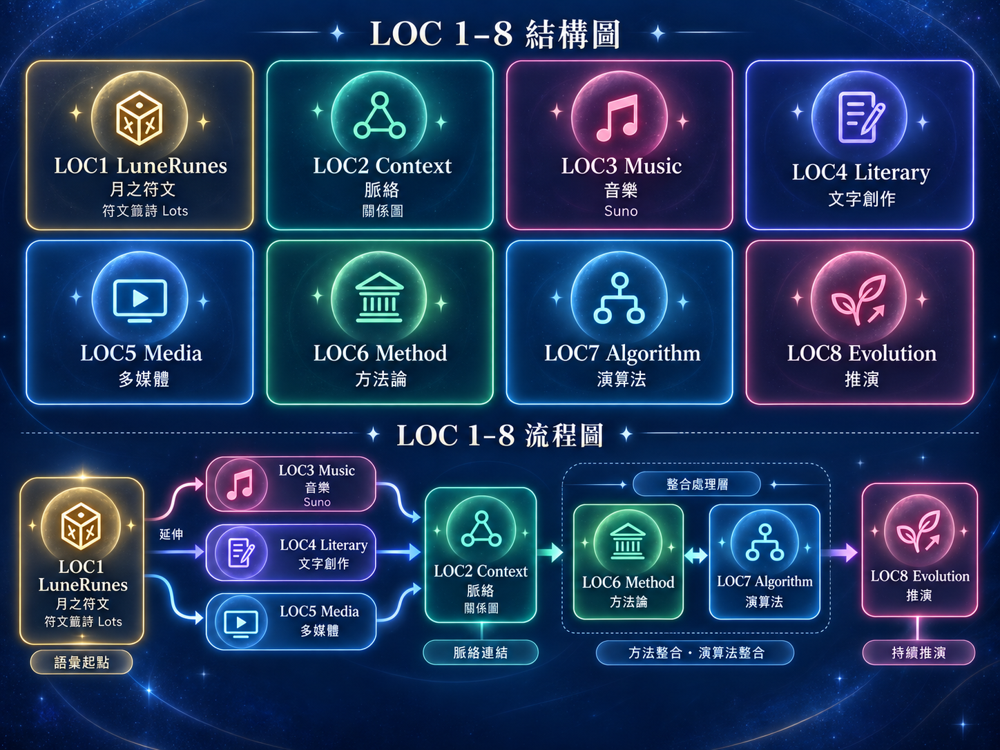

月之符文作為語彙種子，提供基本語意、方位、抽牌與最小可辨識的語言單元。
已實作 · 66 符文＋多種抽牌模式Start Here
今天想從哪裡開始？
完全的新手可以先看「新手教學」。第一次使用可直接抽取每日符文；想查月之符文資料可直接進入「月之符文」；想理解整體則查看「LOC架構圖」。
LunaRunes · 月之符文籤詩系統
問一件事，或讓語言自己成長
月之符文由 66 個中文單一字構成。可以從一個問題開始，也可以沒有問題直接抽取，再依需要選擇不同的抽牌方式。

不知道怎麼說，也沒關係。
月之符文可以成為語意起點：問事、整理感受，或在沒有靈感時提供新的創作路徑。
選擇抽牌方式
從單一卡片到多卡組合，依問題需要選擇不同的抽牌方式（符文演算法）。
Single Rune
單卡
Daily Rune
一個問題，一個語意起點。
每日
2 Cards
一天一張，觀看當日提示。
雙卡
3 Cards
以「因 → 果」觀看兩者關係。
三卡
5 Cards
以「源 → 轉 → 合」形成語意路徑。
五卡
加入內外情境，觀看更完整的問題結構。
OW3gs · 11 張
11 張
OW3gs：兩個因果模組綜合的演算法。目前暫時不提供連結。
LunaRunes Context Evolution
月之符文的語言脈絡
月之符文由基本語彙出發，進入關係與脈絡分析，結合占卜使用的方法體系，演化出全新的語言表達作品。
把語彙放進關係、情境、事件與脈絡圖（Graph），形成可觀察、可互動的脈絡。
已建立 · 32 種事件原型（Event 32）讓符文語彙與創作文字延伸為歌曲、歌詞、聲音與可搜尋的音樂作品。
已建立 · 符文歌讓語彙進入小說、文章、生活文字與敘事作品，累積可分析的文學表達。
已建立 · 符文小說將文字與音樂延伸為圖像、影音、MV 與概念視覺，連接不同表達媒介。
已建立 · 月之符文宣傳 Reels整理占卜、治理與語言判讀的方法，說明語彙如何被理解、組合與使用。
已建立 · 抽牌規則／治理方法將方法、文字結構、知識管理、搜尋與檢索增強生成（RAG）整合成可運作的演算法與知識庫。
持續建構 · 搜尋（Search）／檢索增強生成（RAG）／文字建築（Text Architecture）把作品、語言、方法與風格放回時間、時期、事件（Event）、軌跡（Trajectory）與趨勢（Trend）中進行系統分析，觀察變化並推演可能後續。
已實作 · 時期／時間線（Timeline）／趨勢（Trend）／軌跡（Trajectory）
Context
真實情境｜Event 32
已把記憶、誤解、合作、切斷、等待、選擇、重建等生活狀況整理成事件原型（Event）。雙卡因果可作為最小情境描述，讓符文不只被抽取，也能用來描述與處理問題。
Literary
符文小說｜《月語者》
7 篇 × 26 章，共 182 個章節槽位；其中 180 章保留明確三符文＋方位的創作紀錄，2 章為刻意不抽牌的武打例外。
MultiMedia
跨媒介應用｜符文歌 × 符文小說 × 宣傳 Reels
目前已確認 4 首 work-level 符文歌曲；《界線之內》已更正為非符文歌曲。文字創作包含小說、文章等作品；Threads、Facebook、Instagram 則作為獨立來源平台保存生活文字與貼文，不因來源不同被強迫併成同一種內容。多媒體創作已有公開影音與圖像作品，展示同一語意如何轉成不同媒介。
符文的潛力，不只在「解一張牌」，而在成為可組合、可驗證、可跨媒介、可累積歷史的語言。
Current Progress
目前已經可以做到什麼？
不只整理資料，而是讓文字可以被搜尋、比較、追蹤變化，再回到原始內容確認證據。
Data
可比對資料 24,509 筆・總文字 2,939,214 字
總字數包含 2,356,594 字文章正文、400 首歌詞共 196,624 字，以及 26 份唯一 KM 知識文件共 385,996 字；圖片與影片不計字數。筆數與各來源、內容類型及日期分項統一放在多元搜尋的「資料來源」頁面。
LunaRunes
66 符語意治理與 RAG 預備完成
月之符文66已完成現行母資料正名與核心語意治理；語意引擎的極性與關鍵詞已確認，符文 RAG 的前置資料亦已完成整理。目前持續進行舊版語意污染清理與 64→66 資料路徑收斂。
Knowledge
系統內建 KM 至少 515 個知識單元
目前已登記 31 個 Knowledge Assets；FAQ 單獨即有 90 條。去除檢索投影、文章投影、圖片、重複文件版本與首頁統計展示後，目前有 26 份唯一 KM 知識文件，共 385,996 字。
Evolution
來源 × 時期 動態 Top 10
排行榜可先看全部，再切 Facebook、Threads、Suno，並依現行時期邊界動態重新聚合；時期日期微調時不必重做固定排行。
Search
綜合搜尋＋脈絡圖（Graph）關聯
可以從自然語言查詢作品、文字、知識與時間脈絡，再沿已治理的關係查看相關內容；排行中的詞也能直接回查命中的文章、作品與紀錄。
Governance
全文分析與公開展示分離
授權內容可以用全文做搜尋與分析；公開結果則依內容治理顯示片段、全文或僅 metadata。Facebook 與 Threads 預設採片段展示，歌詞不直接公開全文。
Tutorial
新手教學文件
已提供「語言系統模組入門」與「月之符文入門」兩份新手教學 Web View，讓第一次接觸 LOC 的使用者可以先理解整體架構，再進入月之符文與多卡語法。
結構
它們不是八個彼此獨立的產品，也不是版本先後；而是 LOC 的八個功能責任區：月之符文、脈絡、音樂、文字創作、多媒體、方法論、演算法（知識庫）與推演。

Why LOC Exists
治理已知，是為了把時間還給未知。
月典最初從月之符文開始，之後逐步形成脈絡、作品與多元體系、方法論、演算法（知識庫）與時間中的推演。 它不是為了把人生固定，而是把散落、原本只能靠直覺掌握的語言與經驗， 整理成可回看、可搜尋、可重用的結構。